News
| 2026 | ||
|---|---|---|
| November 16, 2026 | Paige Roach joins the group as a new graduate student. Welcome, Paige! | |
| November 10, 2026 | Deepak, Aiden, Kyra, Sadhana, and Jazmine's manuscript "Bacterial Cell Wall-Induced Aggregation of Nile Blue" has been accepted for publication in The Journal of Chemical Physics. | |
| November 4, 2026 | Sadhana successfully defends her dissertation entitled "Probing Bacterial Interfaces with Multimodal Nonlinear Microscopy: Small-Molecule Behavior at the Single-Cell Level." Congratulations, Dr. Bhat! | |
| October 28, 2026 | Congratulations to Emily for passing her Original Research Proposal! | |
| October 21, 2026 | Congratulations to Kyra for passing her Original Research Proposal! | |
| September 4, 2026 | Sadhana, El, and Emily's manuscript "Nonlinear Imaging of Bacterial Membranes during Adhesion" has been accepted for publication in The Journal of Physical Chemistry B. (Link) | |
| August 26, 2026 | Tessa presented a talk "Membrane potential modulation of bacterial small-molecule transport" at the Fall 2026 National Meeting of the American Chemical Society in Chicago, IL. | |
| May 13, 2026 | Emily presented a research talk "The Electric Slide: Tracking the Role of Membrane Potential in Bacterial Transport Using Second Harmonic Scattering" to the department as part of the 3rd Year Students Research Symposium. | |
| May 11, 2026 | Sadhana presented a research talk at the 61st Annual Meeting of the Southeastern Microscopy Society in Athens, GA. | |
| April 17, 2026 | Kyra presents a research poster, "Decoding the Role of The Cellular Wall in Staphylococcus aureus Molecular Transport," at UT's Biomembranes Symposium. | |
| March 26, 2026 | Tessa gives an invited presentation "Second Harmonic Investigations of Bacterial Membrane Complexity" at the ACS Spring 2026 National Meeting in Atlanta, GA. | |
| March 16, 2026 | Congratulations to Aiden for passing his Candidacy Research Proposal! | |
| February 12, 2026 | Tessa gives an invited presentation "Second Harmonic Investigations of Bacterial Membrane Complexity" in the Department of Chemistry at Berea College. | |
| 2025 | ||
| October 28, 2025 | Emily presented a research poster "Spectroscopic studies of oxygen's role in modulating protonophore impact on small molecule transport across bacterial membranes" at the Southeastern Regional Meeting of the American Chemical Society (SERMACS) in Orlando, FL. | |
| October 27, 2025 | Tessa gives an invited presentation "Tracking molecular behavior at the bacterial interface: Adjuvant effects revealed by second harmonic scattering" at SERMACS in Orlando, FL. | |
| October 27, 2025 | Kyra presented a research talk "How do deadly bacteria react to being skinned alive? A second harmonic scattering study" at SERMACS in Orlando, FL. | |
| August 7, 2025 | Tessa served as a discussion leader for the Biological and Colloidal Liquids session at the Gordon Research Conference on the Chemistry and Physics of Liquids in Holderness, NH. | |
| May 21, 2025 | Jazmine Baxter joins the group as a new graduate student. Welcome, Jazmine! | |
| May 19, 2025 | Sadhana presented a research talk "Investigation of Membrane Complexity in Living Bacteria Using Second Harmonic Generation Microscopy and Vibrational Sum Frequency Scattering" to the department as part of the 3rd Year Students Research Symposium. | |
| May 15, 2025 | Tessa hoods El at commencement!
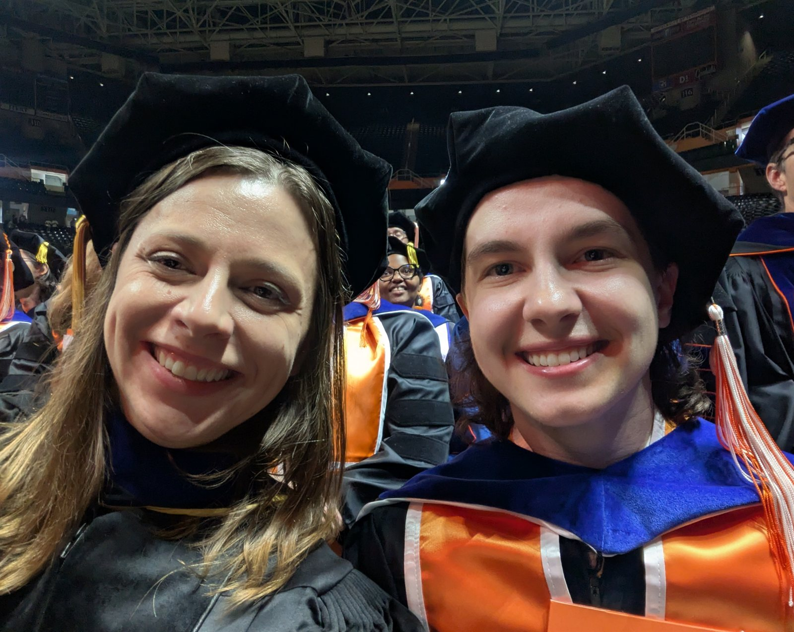 |
|
| May 13, 2025 | A stormy spring Calhoun Lab day out was celebrated with bowling and ice cream.
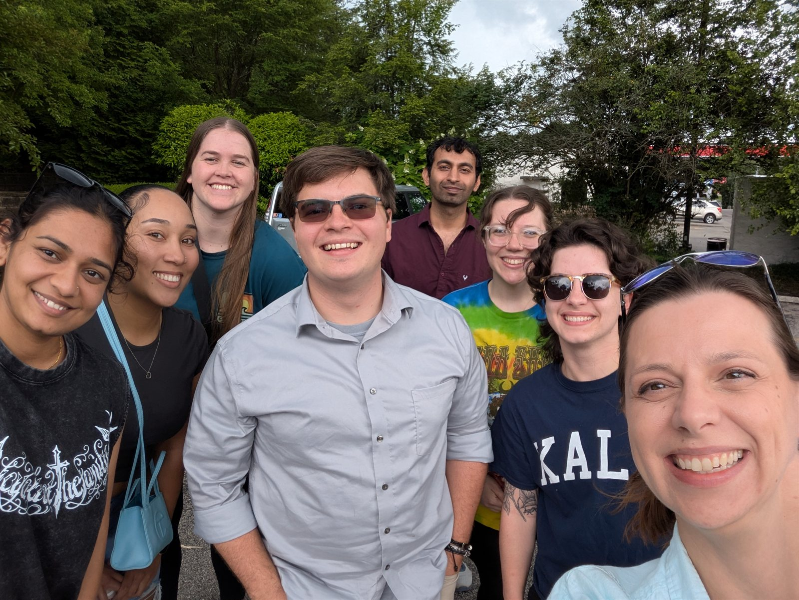 |
|
| April 25, 2025 | Emily presents a research poster, "“Investigation Of Differences In Potentiometric Probe Behavior With Bacterial Membranes Using Second Harmonic Scattering," at UT's Biomembranes Symposium. | |
| April 11, 2025 | Congratulations to Kyra for passing her Candidacy Research Proposal! | |
| March 31, 2025 | El successfully defends their dissertation entitled "Second Harmonic Scattering Unveils Antibiotic Resistance Mechanisms in Gram-Positive Bacteria" Congratulations, Dr. Page! | |
| March 28, 2025 | Congratulations to Emily for passing her Candidacy Research Proposal! | |
| February 15, 2025 | The Calhoun research laboratory space has moved and expanded into newly renovated office and laboratories in the Science and Engineering Research Facility (SERF)!
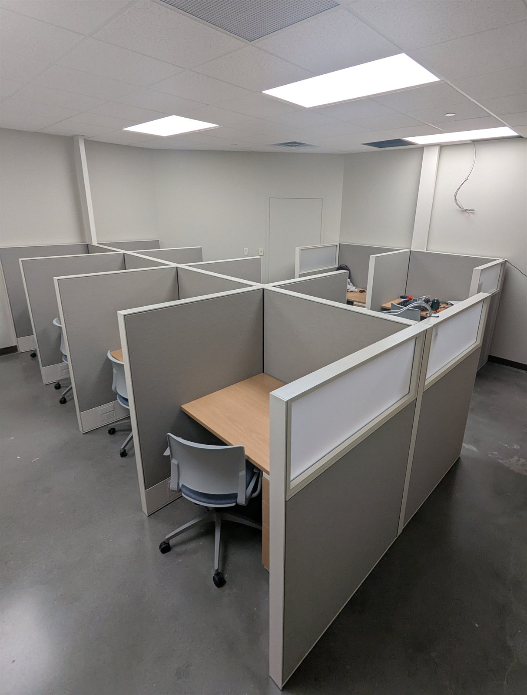 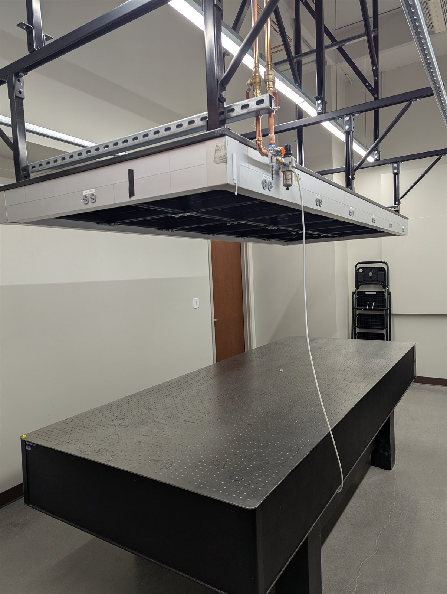 |
|
| 2024 | ||
| December 2, 2024 | Aiden Jeffries joins the group as a new graduate student. Welcome, Aiden! | |
| November 21, 2024 | Tessa gives an invited presentation "Second Harmonic Investigations of Bacterial Membrane Complexity" in the Department of Chemistry at Penn State University. | |
| November 15, 2024 | Deepak Kumar joins the group as a postdoctoral researcher. Welcome, Deepak! | |
| November 4, 2024 | Grant Foley successfully defended his Master's thesis. Congratulations, Grant! | |
| October 25, 2024 | Kyra and Emily present posters on their research at SERMACS.
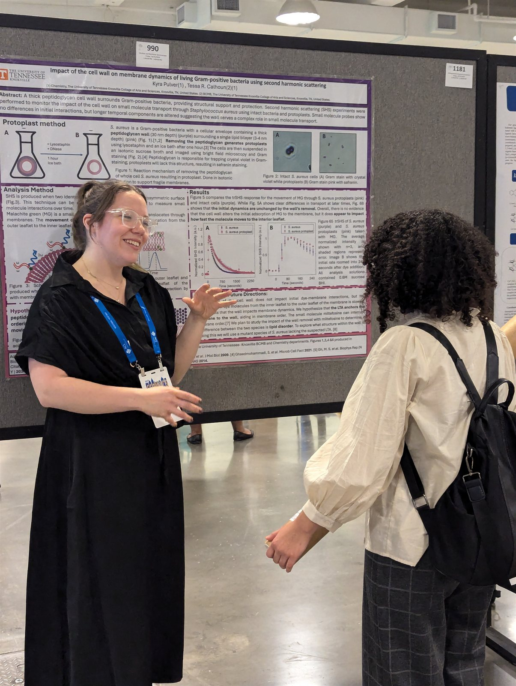 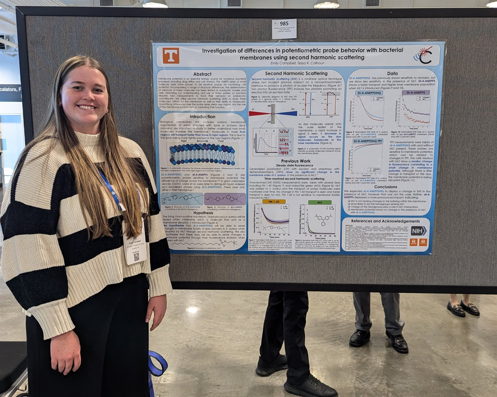 |
|
| October 25, 2024 | El presented a research talk "Membrane-bound efflux-mediated antimicrobial resistance observed in living bacteria with second-harmonic scattering" at the Southeastern Regional Meeting of the American Chemical Society (SERMACS) in Atlanta, GA. | |
| October 24, 2024 | Sadhana presented a research talk "Investigation of Membrane Probe Dynamics in Living Bacteria Using Second Harmonic Generation Microscopy" at the Southeastern Regional Meeting of the American Chemical Society (SERMACS) in Atlanta, GA. | |
| October 19, 2024 | Eleanor and Mikala's manuscript "Second Harmonic Scattering Investigation of Bacterial Efflux Induced by the Antibiotic Tetracycline" has been accepted for publication in The Journal of Chemical Physics. (Link). | |
| October 18, 2024 | Marea and Eleanor's conference proceeding "Probing bacterial membranes with polarization-resolved second harmonic scattering" has been published by SPIE. (Link). | |
| September 13, 2024 | Sadhana presented her research to UT's Community of Scholars for Biomembranes | |
| August 19, 2024 | Emily Donnelly joins the group as an undergraduate researcher. Welcome, Emily! | |
| August 18, 2024 | Tessa gives an invited presentation "Probing bacterial membranes with polarization-resolved second harmonic scattering" at the SPIE Optics + Photonics conference in San Diego, CA. | |
| July 4, 2024 | Marea, Eleanor, and Madeline's manuscript "Miltefosine Impacts Small Molecule Transport in Gram-Positive Bacteria" has been accepted for publication in RSC Chemical Biology. (Link). | |
| July 1, 2024 | Our summer Calhoun Lab Day out consisted of pottery painting and bowling!
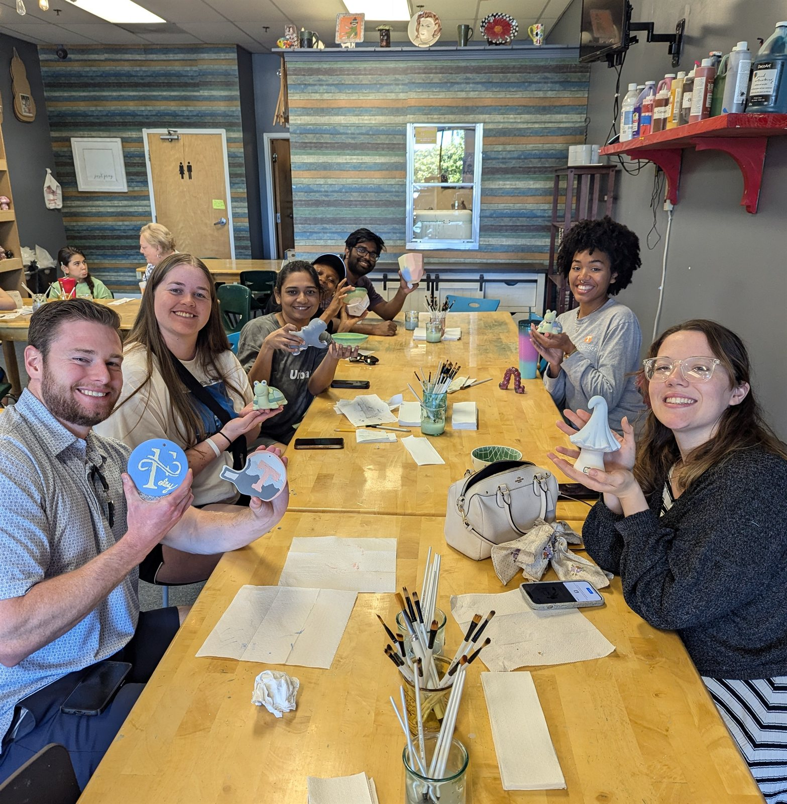 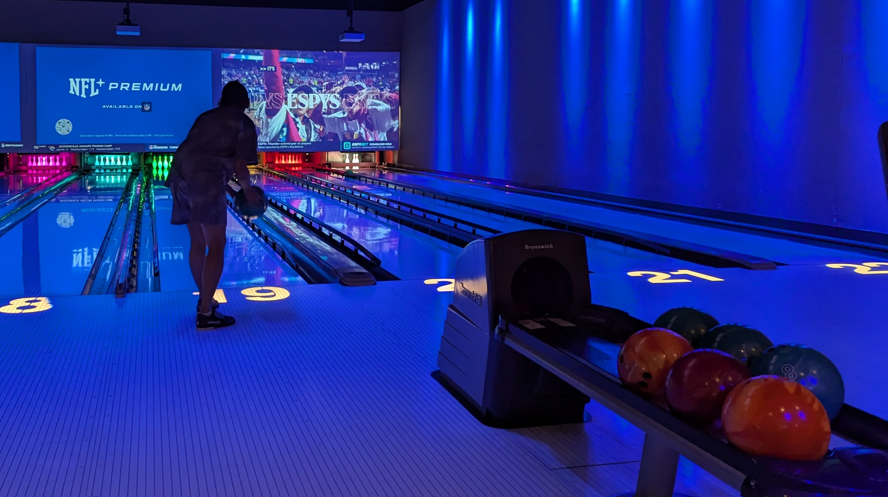 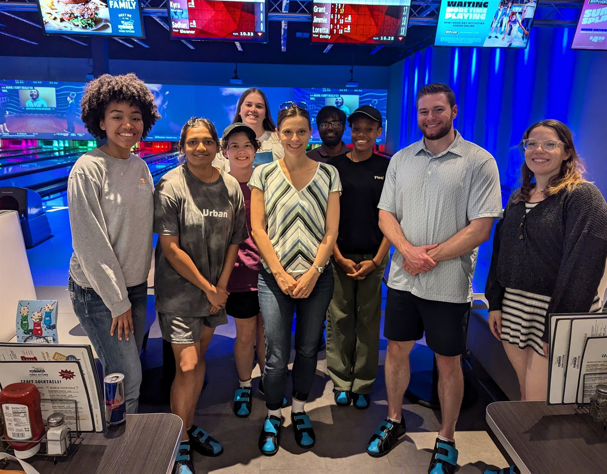 |
|
| June 6, 2024 | Tessa gives an invited presentation at the 2024 Nonlinear Optics at Interfaces workshop in Telluride, CO. | |
| June 5, 2024 | Deztiny Clemons from Louisiana State University joins us as a summer undergraduate researcher. Welcome, Deztiny! | |
| May 18, 2024 | Tessa hoods Marea at commencement!
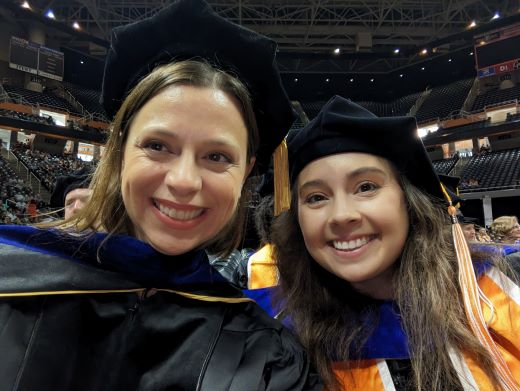  |
|
| April 12, 2024 | Sadhana won first place for her poster at the 3rd annual Community of Scholars Biomembranes Symposium here at UT. | |
| April 9, 2024 | Eleanor presents their research at an Oak Ridge National Lab laser meeting. | |
| April 5, 2024 | Marea successfully defends her dissertation entitled "Investigating Small Molecule Behavior in Living Bacterial Membranes with Second Harmonic Scattering." Congratulations, Dr. Blake! | |
| April 1, 2024 | Congratulations to Sadhana for passing her Candidacy Research Proposal! | |
| March 5, 2024 | Tessa is interviewed for the ``Inside the Laboratory'' series at Spectroscopy Magazine. | |
| 2023 | ||
| November 28, 2023 | Congratulations to Eleanor for passing their Original Research Proposal! | |
| November 21, 2023 | Kyra Pulver and Emily Campbell join the group as new graduate students. Welcome, Emily and Kyra! | |
| November 13, 2023 | Tessa gives an invited presentation ``Second Harmonic Investigations of Bacterial Membrane Complexity'' at the Eastern Analytical Symposium in Plainsboro, NJ. | |
| October 28, 2023 | Marea presents her research, "Employing second harmonic scattering for new membrane insights in living bacteria" at the Southeastern Regional Meeting of the American Chemical Society (SERMACS) in Durham, NC | |
| August 16, 2023 | Eleanor presents "Investigation of tetracycline’s impact on the bacterial membrane with second harmonic scattering" at the ACS National Meeting in San Francisco, CA | |
| July 24, 2023 |
Calhoun lab potluck with special guests from the Heberle and Bailey groups!
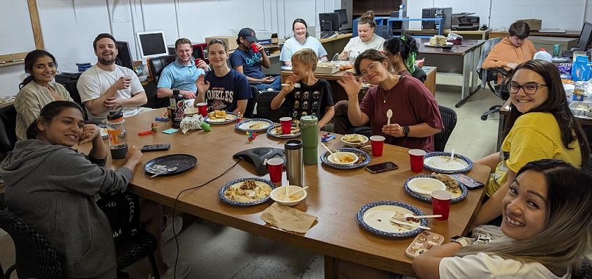 |
|
| June 6, 2023 | Tessa gives an invited presentation ``Antibioitic Insights from Living Bacterial Membranes with Second Harmonic Scattering'' at the 2023 International Conference on Nonlinear Optics at Interfaces in Rome, Italy. | |
| May 23, 2023 | Eleanor presented the research talk "Monitoring Molecule-Membrane Interactions with Second Harmonic Scattering" to the department as part of the 3rd Year Students Research Symposium. | |
| April 29, 2023 | Brandon presents a poster at the Department of Chemistry Undergraduate Research Symposium. | |
| April 14, 2023 | Eleanor gives both an oral and poster presentation at the 2nd annual Community of Scholars Biomembranes Symposium here at UT. | |
| April 6, 2023 |
Calhoun Lab Day Out at Top Golf and Main Event!
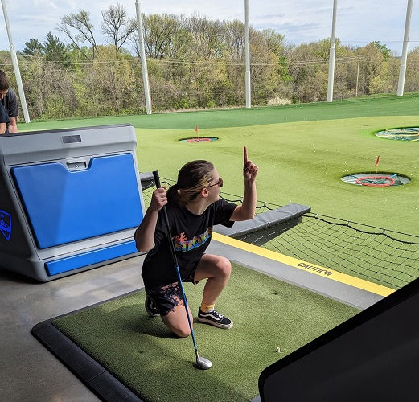 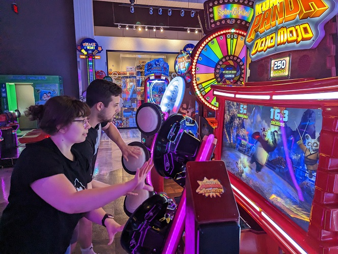 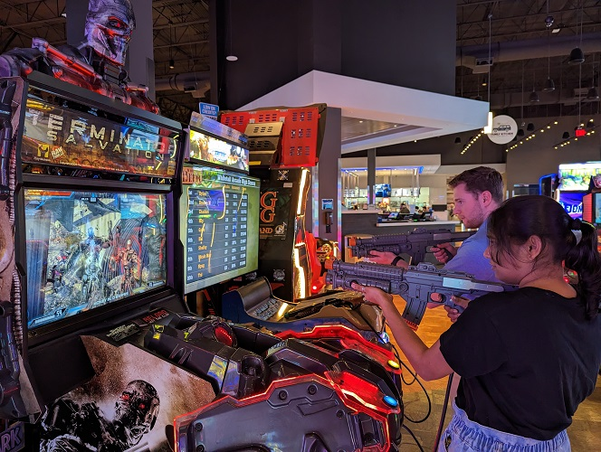 |
|
| April 4, 2023 | Marea, Hannah and Anna's manuscript "Facilitating flip-flop: Structural tuning of molecule-membrane interactions in living bacteria" has been accepted for publication in Biophysical Journal. (Link). | |
| March 30, 2023 | Tessa presents "What can Second Harmonic Generation Teach Us about Bacterial Membranes?" for the Chemistry Department at the University of Alabama. | |
| March 29, 2023 | Marea presents "Second Harmonic Generation: An Investigation of Molecule-Membrane Dynamics Across Living Bacterial Species" at the ACS National Meeting in Indianapolis, IN | |
| March 15, 2023 | Congratulations to Grant for passing his Candidacy Research Proposal! | |
| 2022 | ||
| December 16, 2022 | Tessa hoods Redwan at Graduation! | |
| November 14, 2022 | Brendan Miklos joins the group as a graduate student. Welcome, Brendan! | |
| November 8, 2022 | Tessa gives an invited presentation ``What can second harmonic generation teach us about bacterial membranes?'' at the Southwest Regional ACS meeting in Baton Rouge, LA. | |
| November 3, 2022 | Eleanor, Marea, and Grant's invited perspective article ``Monitoring Membranes: The Exploration of Biological Bilayers with Second Harmonic Generation'' has been accepted for publiation in Chemical Physics Reviews ! | |
| October 28, 2022 |
Halloween group potluck including costumes!
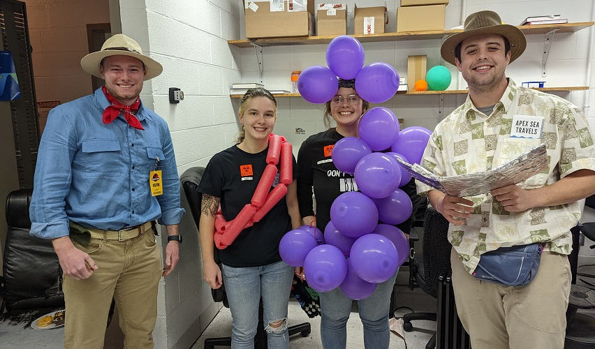 |
|
| October 21, 2022 | Congratulations to Marea for passing her Original Research Proposal! | |
| August 24, 2022 | Mikala Blackmon joins the group as an undergraduate researcher. Welcome! | |
| August 3, 2022 | Marea presented a research talk "Dynamics Between Small Molecules and Living Bacterial Membranes Probed by Second Harmonic Generation" to the department as part of the 3rd Year Students Research Symposium. | |
| July 29, 2022 | Redwan successfully defends his dissertation entitled "Light Matter Interactions: A Study of Soft Materials Using Linear and Nonlinear Spectroscopy." Congratulations, Dr. Hassan! | |
| June 14, 2022 | Redwan, Brandon and James's manuscript "Small Molecule Sorting: A Fluorescence Study of Microemulsions" and cover image have been accepted for publication in the Journal of Physical Chemistry B. | |
| June 1, 2022 | Anna Curtus from East Tennessee State University and Julianna Cox from Mississippi Valley State University join us as REU students for the summer. Welcome, Anna and Julianna! | |
| May 16, 2022 | Sadhana Bhat joins the group as a graduate student. Welcome, Sadhana! | |
| April 11, 2022 | Congratulations to Eleanor for passing her Candidacy Research Proposal! | |
| March 21, 2022 | Marea presents "Monitoring the tunability of small molecule-membrane interactions in living bacteria with second harmonic scattering" at the ACS National Meeting in San Diego, CA | |
| March 21, 2022 | Tessa presents "Localization and Dynamic Patterns in Microemulsions" at the ACS National Meeting in San Diego, CA | |
| March 17, 2022 | Our Calhoun Lab Day out for this semester included a trip to the climbing wall! Check out some pictures HERE. | |
| January 24, 2022 | Jackson McLemore and Brandon Shaw join the group as undergraduate researchers. Welcome! | |
| 2021 | ||
| December 19, 2021 | Tessa gives an invited presentation at the Pacifichem virtual conference. | |
| December 9, 2021 | Tessa hoods Brandon at Graduation! | |
| December 6, 2021 | Grant Foley joins the group as a graduate student. Welcome, Grant! | |
| September 28, 2021 | Tessa presents at the AIP Publishing Horizons: Photonics in Chemical Physics virtual conference. | |
| September 21, 2021 | Lindsey, Marea and Eleanor's manuscript "Phosphate ions alter the binding of daptomycin to living bacterial cell surfaces" has been accepted for publication in ACS Infectious Diseases. | |
| September 14, 2021 | Our R35 proposal "Probing How Living Bacterial Membranes Control Small Molecule Uptake" has been selected for funding by the NIH National Institute of General Medical Sciences! | |
| September 2, 2021 | Tessa presents "New Insight into Living Bacterial Membranes via Second Harmonic Generation" for the Saykally group meeting at UC Berkeley. | |
| August 23, 2021 | Tessa, Redwan, and Marea give oral presentations at the ACS Conference in Atlanta, GA. | |
| August 16, 2021 | Alexis Sanwick joins the group as a graduate student. Welcome, Alexis! | |
| July 28, 2021 | Brandon successfully defends his dissertation entitled "Total Internal Reflection: Applications in Nonlinear Microscopy and Fluorescence Anisotropy." Congratulations, Dr. Colon! | |
| June 28, 2021 | We finally got a chance to do another Calhoun Lab Day Out filled with food, bowling, laser tag, and arcade games! Winnings were spread throughout the group with Redwan and Brandon in bowling, Eleanor in laser tag, and Marea in the arcade. | |
| June 23, 2021 | Tessa presents at the Telluride Research Science Center "Complexity in the Chemistry and Physics of Lipid Membranes" Workshop | |
| June 16, 2021 | Congratulations to Marea for passing her Candidacy Research Proposal! | |
| May 25, 2021 | Hannah Castillo joins us from Andrews College as an REU student for the summer. Welcome, Hannah! | |
| May 13, 2021 | Our proposal "Small Molecule Uptake and Transport in Living and Model Bacterial Membranes" has been selected for funding by the National Science Foundation! | |
| 2020 | ||
| December 11, 2020 | Congratulations to Redwan for passing his Original Research Proposal! | |
| November 12, 2020 | Marea and Brandon's invited perspective article ``Leaving the Limits of Linearity for Light Microscopy'' has been featured on the cover of the Journal of Physical Chemistry C ! (Link) | |
| November 11, 2020 | Eleanor is awarded 5th place in the ACGS Halloween costume (Link)! | |
| November 11, 2020 | Eleanor Page joins the group as a graduate student. Welcome, Eleanor! | |
| October 1, 2020 | Lindsey's manuscript using second harmonic generation to reveal the impact of phosphate ions on the binding of the antibiotic, daptomycin, to living baterial cells is now available on ChemRxiv. | |
| September 22, 2020 | Marea and Brandon's invited perspective article ``Leaving the Limits of Linearity for Light Microscopy'' has been accepted for publication in the Journal of Physical Chemistry C ! | |
| August 19, 2020 | Brandon gives an oral presentation about his research as part of the ACS Virtual Conference. | |
| August 17-20, 2020 | Tessa is a co-organizer/host of the ACS symposium "Addressing Chemical Complexity with Nonlinear Optical Microscopy." Check it out here: https://calhoun.utk.edu/ACS2020.html | |
| August 1, 2020 | Tessa is promoted to the rank of associate professor with tenure. | |
| July 21, 2020 | Lindsey successfully defends her dissertation entitled "Using Second Harmonic Generation to Study Gram-Positive Bacterial Membranes." Congratulations, Dr. Miller! | |
| July 8, 2020 | Redwan gave an oral presentation on his research to the department as part of the 3rd Year Students Research Symposium | |
| April 27, 2020 | Brandon and Redwan's paper using transient absorption microscopy in a total internal reflection geometry has been accepted for publication in the Journal of Physical Chemistry A as part of the virtual special issue on Time-Resolved Microscopy! | |
| April 16, 2020 | Brandon presents his research on "Total Internal Reflection Transient Absorption Microscopy: An On-line Detection Method for Microfluidics" in the UTK Chemistry departmental seminar. | |
| January 24, 2020 | A great Calhoun Lab Day Out to start the year! Tessa and Redwan had bowling victories while Lindsey and Marea celebrated wins in laser tag. | |
| 2019 | ||
| December 15, 2019 | Congratulations to Brandon for passing his Original Research Proposal! | |
| November 15, 2019 | Congratulations to Lindsey for passing her Original Research Proposal! | |
| November 13, 2019 | Marea Blake joins the group as a graduate student. Welcome, Marea! | |
| November 1, 2019 | Brandon is a winner of the department's Board of Visitor's Poster Competition! | |
| October 23, 2019 | Brandon presents his research at the Southeastern Regional Meeting of the American Chemical Society (SERMACS) in Savannah, GA and Tessa gives a seminar in the Department of Chemistry at Utah State University. | |
| October 21, 2019 | Tessa presented a seminar in the Department of Chemistry at the University of Utah. | |
| October 7, 2019 | Tessa gave an invited talk and Lindsey and Brandon presented posters at the Southeast Ultrafast Conference in Durham, NC. | |
| September 16, 2019 | Tessa presented a seminar in the Department of Chemistry & Biochemistry at the University of Notre Dame. | |
| September 13, 2019 | Lindsey's paper using second harmonic generation to study membrane probes in gram-positive bacteria has been accepted in Biophysical Journal! | |
| August 21, 2019 | James Russell joins the group as an undergraduate researcher. Welcome, James! | |
| August 8, 2019 | Brandon Woitas successfully defended his Master's thesis. Congratulations, Brandon! | |
| August 2, 2019 | Brianna's paper using electronic sum frequency generation microspectroscopy to directly probe surface trap states in CdSe quantum dots has been accepted in Nano Letters! (Link) | |
| August 1, 2019 | We had a great time at the Calhoun Lab Day Out! Congrats to Kevin for his putt-putt win while Tessa and Brandon C. took home wins in bowling and MarioKart. | |
| June 24, 2019 | Congratulations to Redwan for passing his Candidacy Research Proposal! | |
| May 21, 2019 | Brandon Colon gave an oral presentation on his research to the department as part of the 3rd Year Students Research Symposium | |
| April 22, 2019 | Tessa presented a seminar in the Department of Chemistry at the University of Southern California | |
| April 17, 2019 | Lindsey gives an oral presentation about her research at the OSA Biophotonics Congress in Tucson, AZ | |
| March 31, 2019 | Tessa speaks about "Probing the interaction of small molecules with living cell membranes using second harmonic generation" at the ACS National Convention in Orlando, FL | |
| March 8, 2019 | Tessa presented a seminar in the Department of Chemistry at the University of Georgia | |
| February 25, 2019 | Tessa presented a seminar in the Department of Chemistry at Emory University | |
| February 21, 2019 | Lindsey presents her research on "Probing membrane dynamics in living bacterial using second harmonic generation" in the UTK Chemistry departmental seminar | |
| February 20, 2019 | Tessa presented a seminar in the Department of Chemistry at the University of North Carolina at Chapel Hill | |
| February 19, 2019 | Tessa presented a seminar in the Department of Chemistry at Duke University | |
| January 9, 2019 | Kevin Mendes joins the group as a graduate student, and Tori Stromberg joins the group as an undergraduate researcher. Welcome! | |
| 2018 | ||
| November 11, 2018 | Brianna's paper on "Probing Ligand Removal and Ordering at Quantum Dot Surfaces Using Vibrational Sum Frequency Generation Spectroscopy" has been accepted in the Journal of Colloid & Interface Science! (Link) | |
| November 9, 2018 | Lindsey is a winner of the department's Board of Visitor's Poster Competition! | |
| October 24, 2018 | Tessa is an invited speaker and Lindsey gives an oral presentation at the SciX Conference in Atlanta, GA | |
| October 16, 2018 | Tessa presented a seminar in the Department of Chemistry at the University of Wisconsin-Madison | |
| August 22, 2018 | Madeline Bellers joins the group as an undergraduate researcher. Welcome, Madeline! | |
| August 14, 2018 | Tessa is an invited speaker and Lindsey presents a poster at the Southeast Ultrafast Conference in Atlanta, GA | |
| August 2, 2018 | Kevin successfully defends his thesis entitled "Transient Absorption Microscopy: Instrumentation and Application to Amphotericin B"! | |
| June 29, 2018 | The EFRC proposal "Breakthrough Electrolytes for Energy Storage" that we are collaborating on was chosen by the Department of Energy for funding! | |
| May 24, 2018 | Sergio Axel Perez Cruz joins us from Berea College as an REU student for the summer. Welcome, Axel! | |
| May 10, 2018 | Tessa hoods Brianna at Graduation! | |
| April 17, 2018 | Brianna presents at the Ultrafast Bandgap Photonics III Conference as part of the SPIE Defense + Security Symposium in Orlando, FL. (Link) | |
| March 30, 2018 | Brianna successfully defends her dissertation entitled "Probing the Interfaces of Semiconducting Nanoparticles using Sum Frequency Generation: Instrument Development and Design"! | |
| March 12, 2018 | Kevin's paper on the use of a "Compressed Supercontinuum Probe for Transient Absorption Microscopy" has been accepted in Optics Letters! (Link) | |
| March 6, 2018 | Congratulations to Brandon C. for passing his Candidacy Research Proposal! | |
| March 1, 2018 | Lindsey presents at the UTK Women in STEM Symposium. | |
| January 10, 2018 | Redwan Hassan and Brandon Woitas join the group as graduate students. Malik Abu Hatab joins the group as an undergraduate researcher. Welcome! | |
| 2017 | ||
| November 8-9, 2017 | Brianna and Lindsey present their research at the Southeastern Regional Meeting of the American Chemical Society (SERMACS) in Charlotte, NC. | |
| October 26, 2017 | Congratulations to Brianna for passing her Original Research Proposal! | |
| October 19, 2017 | Tessa was the seminar speaker at the Beckman Laser Institute at the University of California, Irvine. | |
| October 12, 2017 | Kevin won a Student Poster Award for his presentation at the SciX Conference in Reno, NV! | |
| September 28, 2017 | Tessa was the seminar speaker in the Department of Chemistry at the University of Alabama. | |
| August 23, 2017 | Dinesh Velu joins the group as an undergraduate researcher. Welcome, Dinesh! | |
| June 8, 2017 | Tessa presents at Photonics North in Ottawa, Canada as an invited speaker. | |
| June 1, 2017 | Taylor Lewis joins us from Tiffin University as an REU student for the summer and Grace Sarabia joins the group as a summer researcher. Welcome, Taylor and Grace! | |
| April 6, 2017 | Brianna presents at the ACS National Meeting in San Francisco, CA. | |
| April 4, 2017 | Kevin presents at the OSA Biomedial Optics & Photonics Congress: Optics in the Life Sciences in San Diego, CA. | |
| April 3, 2017 | Tessa presents at the ACS National Meeting in San Francisco, CA as an invited speaker. | |
| March 21, 2017 | Brianna presents at the UTK Women in STEM Symposium. | |
| March 15, 2017 | Congratulations to Lindsey for passing her Candidacy Research Proposal! | |
| January 19, 2017 | Tessa presents at the Southeast Ultrafast Conference at Clemson University as an invited speaker. | |
| January 11, 2017 | Ryan Hughes joins the group as an undergraduate researcher. Welcome, Ryan! | |
| 2016 | ||
| December 7, 2016 | Congratulations to Brittany for successfully defending her Honor's Thesis! | |
| August 17, 2016 | Seth Sherrill joins the group as a undergraduate researcher. Welcome, Seth! | |
| June 1, 2016 | Brandon Colon joins the group as a graduate student. Welcome Brandon! | |
| May 23, 2016 | Joselyn Resto-Santana joins us from the University of Puerto Rico at Mayagüez as an REU student for the summer. Welcome, Joselyn! | |
| May 4, 2016 | Tessa was a panelist on UTK's Graduate School of Education STEM Twitter Panel Discussion. | |
| April 28, 2016 | Congratulations to Brianna, Lauren and Brittany for winning awards at Honor's Day! Lauren was a recepient of the Halbert and Anne Carmichael Scholarship, Brittany received a Hach Foundation Scholarship, and Brianna was awarded the Judson Hall Robertson Fellowship in Analytical Chemistry. | |
| April 15, 2016 | Brianna presented a poster at the UTK Women in STEM Symposium. | |
| March 25, 2016 | We have been awarded an AREA grant from NIH! | |
| January 26, 2016 | Our collaborative project led by the Fozo lab in Microbiology has been funded by NIH! | |
| January 14, 2016 | Brianna and Kevin presented posters at the Southeast Ultrafast Conference. | |
| January 13, 2016 | Brittany Ramsey joins the group as an undergraduate researcher. Welcome, Brittany! | |
| 2015 | ||
| October 15, 2015 | Tessa was the seminar speaker in the Department of Biochemistry and Cellular and Molecular Biology at UTK. | |
| August 19, 2015 | Lindsey Miller becomes a first year graduate student in the group! | |
| August 19, 2015 | Ashley Bloom and Lauren Finney join the group as undergraduate researchers. Welcome, Ashley and Lauren! | |
| July 29, 2015 | Brianna's paper on the "Elucidation of perovskite film micro-orientations using two-photon total internal reflectance fluorescence microscopy" has been accepted in The Journal of Physical Chemistry Letters! | |
| June 3, 2015 | Congratulations to Kevin on passing his Candidacy Research Proposal! | |
| May 18, 2015 | Sharon Aioyka joins us from the University of North Carolina, Pembroke as an REU student for the summer. Welcome, Sharon! | |
| April 18, 2015 | Tessa is a panelist on the University of Tennessee's Women in STEM Research Symposium Q&A Panel. | |
| March 24, 2015 | Congratulations to Brianna for passing her Candidacy Research Proposal! | |
| 2014 | ||
| December 19, 2014 | Our Joint Directed Research and Development proposal to the UT-ORNL Science Alliance has been selected for funding! | |
| October 1, 2014 | Our collaborative project led by Dr. Jennifer Morrell-Falvey has been selected for funding as part of the Laboratory Directed Research and Development program at ORNL. | |
| August 20, 2014 | Alexandra Novak joins the group as a graduate student. Welcome, Alex! | |
| August 20, 2014 | Lindsey Miller, Anna Fraser, and Brittney Wright join the group as undergraduate researchers. Welcome! | |
| May 19, 2014 | Stephanie Armas joins us from the University of Central Florida as an REU student for the summer. Welcome, Stephanie! | |
| April 28, 2014 | Brianna Watson joins the group as a graduate student. Welcome, Brianna! | |
| April 25, 2014 | Tessa is selected as a Fellow of the first class of the Science Alliance JDRD Collaborative Cohort Program. | |
| April 15, 2014 | Our collaborative project led by Dr. Mitchel Doktycz at ONRL is chosen for funding by DOE! | |
| January 8, 2014 | Philip Belcher, Kevin Higgins, and Tyler Thompson join the group as graduate students. Welcome! | |
| 2013 | ||
| August 21, 2013 | Richard Prince joins the group as an undergraduate researcher. Welcome, Richard! | |
| August 12, 2013 | The Calhoun lab moves to the University of Tennessee, Knoxville! | |